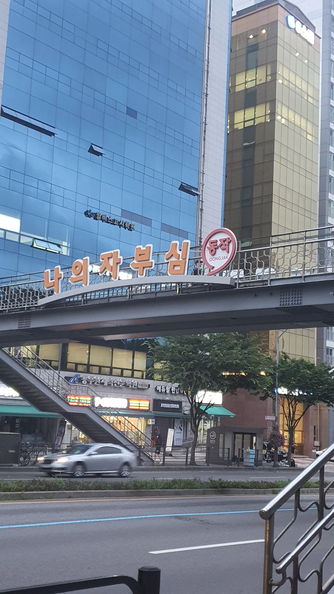
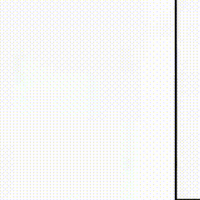

의자 부순게 뭐 자랑이라고 써붙여놨냐.jpg
댓글
동작 그만
밑장 빼기냐?
시골의자를 가져오면 우짜노~!
내 의자하고 정마담 의자를 부쉈지 내가 빙다리 핫바지로 보이냐?
그래도 동작하면 자랑해야지


오 멋지다
이해하고 웃어서 존심 상함.
동작아~ 이젠 말썽 피우지 않고 오래오래 행복해야 한다~

나여 자부심
여자는 어떻게 부셨냐?
부서진 의자지만 동작한다고 자랑하는거잖아

동작 그만
밑장 빼기냐?
시골의자를 가져오면 우짜노~!
내 의자하고 정마담 의자를 부쉈지 내가 빙다리 핫바지로 보이냐?
그래도 동작하면 자랑해야지

오 멋지다
이해하고 웃어서 존심 상함.
동작아~ 이젠 말썽 피우지 않고 오래오래 행복해야 한다~
나여 자부심
여자는 어떻게 부셨냐?
부서진 의자지만 동작한다고 자랑하는거잖아
아이고 동작아!